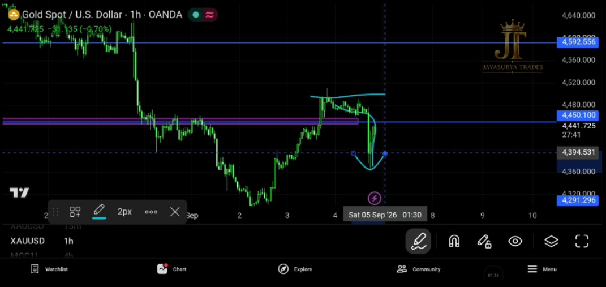
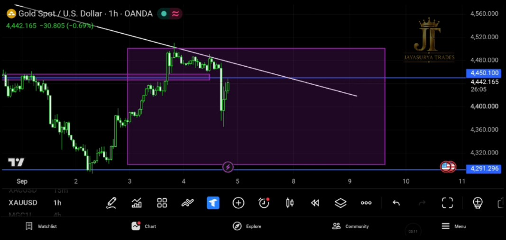
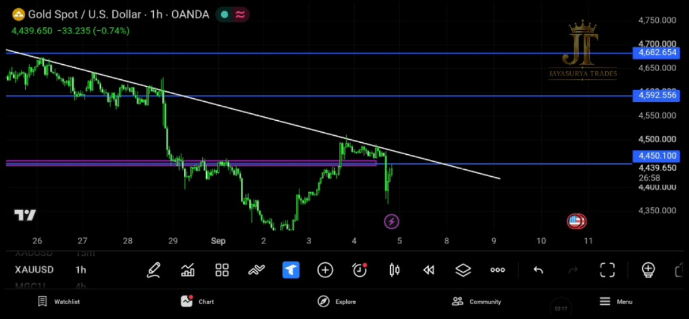

In yesterday's analysis, I explained that the market had broken 4450.100 with a candle close. Because that level had been broken with confirmation, I said it was better to stay focused on the buy side and avoid looking for sell entries.
Today, however, Gold did not provide a valid buy entry. Instead, the market moved back below 4450.100. This does not automatically mean that the market has changed into a downtrend or that I should now look for sell entries. The market simply has not given the buy confirmation or setup I am waiting for.
For the next trading day, the structure I am watching is a clear trendline pattern together with a rectangle zone between 4500 and 4300. My approach is to wait for the market to prove its direction with a confirmed close before considering an entry.
Watch Today's XAUUSD Analysis

What Happened After Yesterday's Analysis?
Yesterday, the important development was the candle close above 4450.100. Based on that confirmation, I said not to look for sell entries and instead to stay focused on the buy side.
Today, the market did not give the buy entry I was waiting for. Price fell back below 4450.100, but that move alone is not enough for me to declare a downtrend or switch directly to the sell side.
Those who followed yesterday's analysis would not have forced a short trade in this scenario. That is important because when the market has not confirmed a sell direction, entering simply because price has moved down can carry a high possibility of getting stopped out.
Staying out and waiting for confirmation is better than forcing a trade when the market has not decided its direction.

The Trendline Pattern and the Invisible Rectangle Zone
For tomorrow, the market is forming a clear trendline pattern. Alongside that, I have marked what I am referring to as an invisible rectangle zone, covering the price range between 4500 and 4300.
This 4500–4300 range is an area where I would rather not take an entry. Instead, I want the market to show a confirmed close above 4500 or below 4300. Once that confirmation is given, I can then look for a setup in the direction of the breakout.
The key idea is simple: do not force an entry inside this range. Wait for the market to close outside the zone and then evaluate the direction and confirmation.
What If the Market Breaks Down?
If the market breaks down through the 4300 side of the rectangle zone with confirmation, the next support level I am watching is around 4291.296.
This is a scenario I am watching only if the downside breakout is confirmed. I am not treating a move inside the range as a sell signal.
What If the Market Breaks Above?
If Gold breaks above the 4500 side of the rectangle zone with confirmation, the next immediate resistance level I am watching is 4592.556.
The bullish scenario becomes more interesting if price also breaks the trendline. From my personal view, I see a high potential for the market to break above the trendline and produce a bullish move, but this remains a scenario I am watching, not a guaranteed outcome.
4500–4300 range → wait for a confirmed breakout rather than forcing an entry inside the zone.

Aggressive vs Conservative Approach
Aggressive Traders
Those who are more aggressive can watch for buy setups after a confirmed break above the trendline. Even then, the breakout should be confirmed before entering rather than anticipating it in advance.
Conservative Traders
Those who are more conservative can wait for both the trendline breakout and a confirmed break of the 4500–4300 price range. This approach gives the market more room to prove the direction before considering an entry.
How I Am Approaching Gold Tomorrow
For September 5, 2026, my approach is to stay patient. The market has not given a buy entry today, and the move back below 4450.100 does not by itself mean that the trend has changed to down or that I should immediately look for sell entries.
- Yesterday, the market had broken 4450.100 with a candle close.
- Because of that confirmation, I said to avoid sell entries and focus on the buy side.
- Today, the market did not provide a valid buy entry.
- The market fell back below 4450.100, but I am not treating that alone as a downtrend confirmation.
- Staying out of a trade can be the correct decision when the market has not provided the required setup.
- The market is now forming a clear trendline pattern.
- I have also marked an invisible rectangle zone between 4500 and 4300.
- I prefer not to take entries inside this 4500–4300 range.
- A confirmed break below the zone can bring 4291.296 into focus as the next support I am watching.
- A confirmed break above the zone can bring 4592.556 into focus as the next immediate resistance I am watching.
- I personally see high potential for a break above the trendline and a bullish move, but I will wait for confirmation.
- More aggressive traders can watch for buy setups after a confirmed trendline breakout.
- More conservative traders can wait for both the trendline breakout and the 4500–4300 range breakout.
The objective is not to predict every movement. It is to wait until the market decides its direction, confirm the move, and then execute the plan instead of forcing a trade in an uncertain area.
Avoid unwanted trades.
Respect the market direction.
Wait for confirmation.
Let the market prove the change.
Key Takeaways
- Yesterday's candle close above 4450.100 led me to focus on the buy side and avoid sell entries.
- Today, the market did not provide a valid buy entry.
- The move back below 4450.100 does not automatically confirm a downtrend.
- Following the plan and staying out of an unwanted trade is better than forcing an entry.
- The market is forming a clear trendline pattern.
- The marked rectangle zone covers 4500–4300.
- I prefer to avoid entries inside the 4500–4300 range and wait for a confirmed breakout.
- A confirmed downside break can bring 4291.296 into focus as the next support.
- A confirmed upside break can bring 4592.556 into focus as the next immediate resistance.
- I see high potential for a trendline breakout to the upside, but confirmation is still required.
- Aggressive traders can watch for buy setups after a confirmed trendline breakout.
- Conservative traders can wait for both the trendline and the 4500–4300 range to break with confirmation.
Avoid unwanted trades.
Respect the market direction.
Wait for confirmation.
Let the market prove the change.
Risk Disclaimer
This analysis is provided for educational and informational purposes only and should not be considered financial advice or a recommendation to buy or sell any financial instrument. Trading involves substantial risk. Always conduct your own research and follow your own trading plan and risk-management rules.